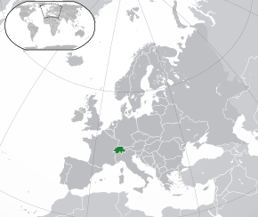

Celkový přehled
Švýcarsko (zastarale Švýcary, německy Schweiz, francouzsky La Suisse, italsky Svizzera, rétorománsky Svizra, latinsky Helvetia), plným názvem Švýcarská konfederace (německy Schweizerische Eidgenossenschaft, francouzsky Confédération suisse, italsky Confederazione Svizzera, rétorománsky Confederaziun svizra, latinsky Confoederatio Helvetica), je vnitrozemský stát ve střední Evropě. Švýcarsko leží mezi Bodamským jezerem na severovýchodě, Ženevským jezerem na západě, Horním a Alpským Rýnem na východě a Rýnem na severu, Jurou na severu a jižními Alpami. Švýcarsko sousedí s následujícími státy, se kterými má suchozemské hranice: s Itálií je 734,2 km, s Francií 571,8 km, s Německem 345,7 km, s Rakouskem 165,1 km (přerušena Lichtenštejnskem) a s Lichtenštejnskem 41,1 km; celkem 1857,9 km.
Geografie
Švýcarsko je se svou rozlohou 41 000 km² malou zemí. Počet obyvatel země je 8 milionů a hustota obyvatelstva je 188/km², což je asi o 1/3 více než v Česku.
Ve Švýcarsku jsou tři typy horských oblastí: Jura, Švýcarská plošina a Švýcarské Alpy.
Jura je úzké, 250 km dlouhé vápencové pohoří s výškou až 1 700 m n. m. Jura se od Alp odděluje jižně od Ženevského jezera a táhne se obloukem podél hranice s Francií. Pokrývá zhruba 10 % území země.
Švýcarské Alpy tvoří více než 57 % území země a patří převážně k Západním Alpám. Táhnou se převážně v od jihozápadu k severovýchodu. Rozdělují se na severní a jižní pásmo. Severní část Švýcarských Alp tvoří Bernské Alpy na západě a Glarnské Alpy. Jižní část tvoří Walliské Alpy, Tessinské Alpy a Bündnerské Alpy. Centrem Švýcarských Alp je masiv sv. Gotthard. Nejvyšším štítem Švýcarských Alp je Dufourspitze (Dufourův štít se 4 634 m n. m.). Pramení zde několik evropských řek: Aare, Rýn, Rhôna či Inn.
Švýcarská plošina pokrývá asi 37 % území země. Nachází se mezi Jurou a Alpami a mezi Ženevským a Bodamským jezerem. V jejím centru leží město Bern. Jezera, doliny a kopce na ní vznikly působením ledovce. Tato pahorkatina je hospodářským centrem země.
Mapa kantonů
Mapa pohoří
Politický systém
Občan
Politickou, zákonodárnou – ale i výkonnou – moc na úrovni obcí, kantonů a konfederace představují občané, jimž jsou podřízeny i jejich parlamenty (spolkový, kantonální, městské), někde nazývané radou (kantonální, městská, obecní) – „občan je nejvyšším suverénem“.
Suverénem na úrovni obcí/měst, kantonů a na úrovni spolkové je lid, tedy občané, jimž podléhají s konečnou platností všechna rozhodování, což je zakotveno ve spolkové ústavě a ústavách kantonů:
- o zákonech a ústavách
- o věcných záležitostech
V praxi je zvykem, některá práva – podle oblasti a zájmů – propůjčit reprezentantům. Jedná se ale vždy o propůjčení dočasné a záleží na spokojenosti občanů, jestli si tu či onu pravomoc nevrátí do svých výlučných kompetencí.
Spolkový parlament
I když v oficiálním názvu státu přetrvává historické označení – v románských jazycích výraz pro konfederaci, v němčině výraz Eidgenossenschaft, tedy spříseženství, z hlediska fungování politického systému je Švýcarsko federace tvořená 26 spolkovými státy (kantony), kde „dolní“ komora parlamentu je volena v přímých všeobecných volbách.
Spolkový parlament je dvoukomorový a tvoří jej Rada států a Národní rada. Tyto komory volí nejvyšší spolkový výkonný orgán, sedmičlennou spolkovou radu. Spolková rada je volena na základě principu konkordance, tj. začlenění pokud možno největšího podílu stran do vlády. Momentálně mají strany zastoupené ve Spolkové radě 217 z 246 křesel v parlamentě. Členové parlamentu i Spolkové rady jsou voleni na 4 roky.
Budova spolkového parlamentu
Místnost parlamentu
Rada států
Rada států (Ständerat) má 46 členů (po dvou zástupcích za 20 původních kantonů a po jednom za vyjmenované kantony, které historicky vznikly jako polokantony); způsob volby do Rady států je v kompetenci jednotlivých kantonů.
Národní rada
Národní rada (Nationalrat) má 200 členů, kteří jsou voleni proporčním systémem v každém kantonu zvlášť na dobu 4 let. Schází se po dobu 3 týdnů 4x do roka
Základní informace
Geografie
Poloha Švýcarska
| Hlavní město | žádné (de iure) Bern (de facto) |
|---|---|
| Rozloha | 41 285 km² (132. na světě) z toho 4,1 % vodní plochy |
| Nejvyšší bod | Dufourspitze (4634 m n. m.) |
| Rozloha | 46°47′55″ s. š., 8°13′55″ v. d. |
Obyvatelstvo
| Počet obyvatel | 8 606 033 (2019) (98. na světě, 2017) |
|---|---|
| Hustota zalidnění | 188 ob. / km² |
| Jazyk |
|
| Náboženství |
|
Státní útvar
| Státní zřízení | Federativní stranická direktoriální republika s prvky přímé demokracie |
|---|---|
| Spolková rada | Guy Parmelin (prezident na rok 2021), Ignazio Cassis (viceprezident na rok 2021) |
| Rozhodování a reprezentace | předsedu vlády Švýcarsko nezná, vláda rozhoduje v konsensu nebo hlasováním, její rozhodnutí jsou ale podřízena lidu a parlamentu; reprezentační funkci spolkového prezidenta vykonává, vedle svých dalších funkcí, každý rok jiná spolková rada |
| Měna | Švýcarský frank (CHF) |
| HDP/obyv. (PPP) | 61 086 USD (9. na světě, 2015) |
Vlajka a státní znak

Švýcarská vlajka
Švýcarský státní symbol